Colección
Tablero de insignias
Las 24 insignias que se pueden desbloquear. Pulsa cualquiera para ver cómo se gana.
Personajes de la Tripulación Cero
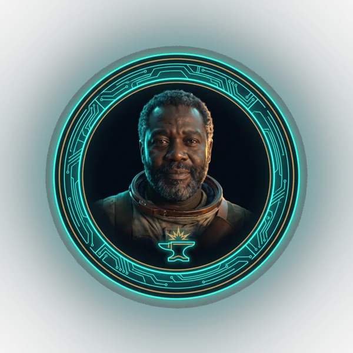
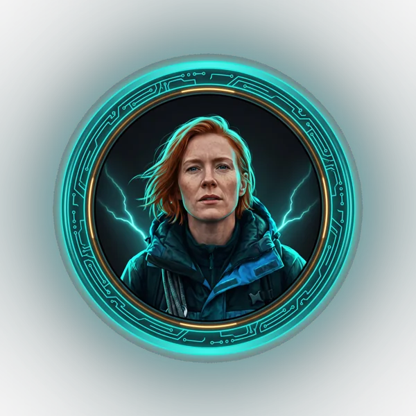
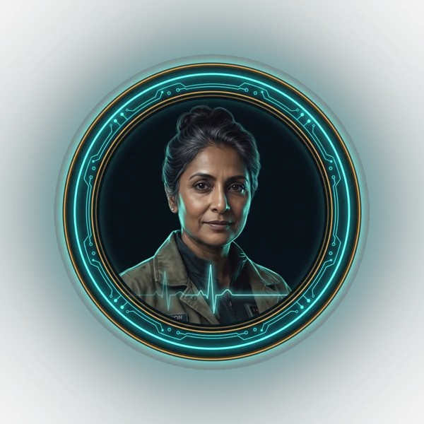
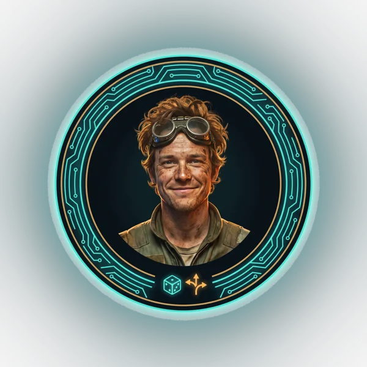
Especiales
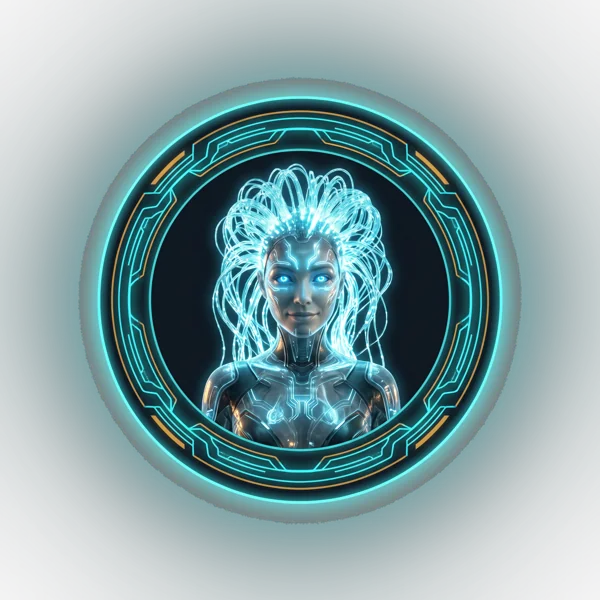
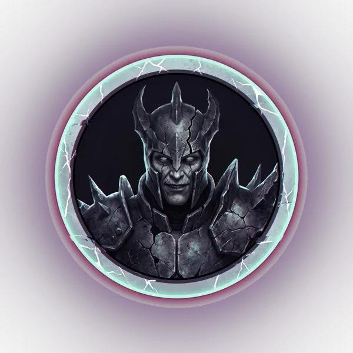
Retos
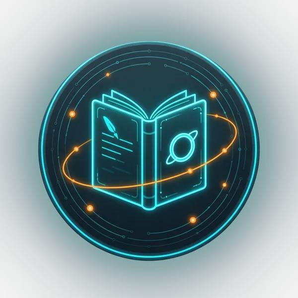
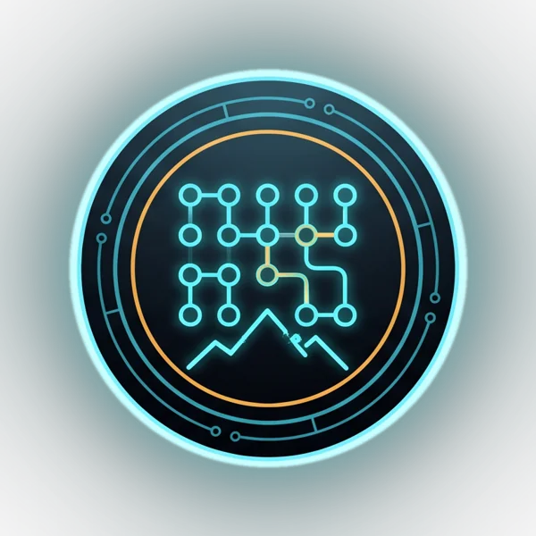
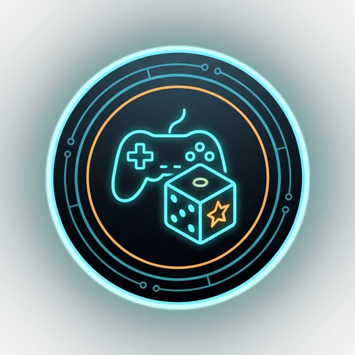
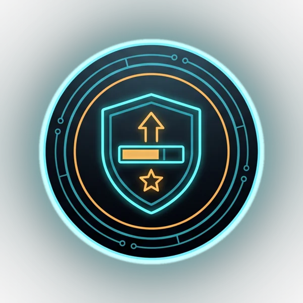
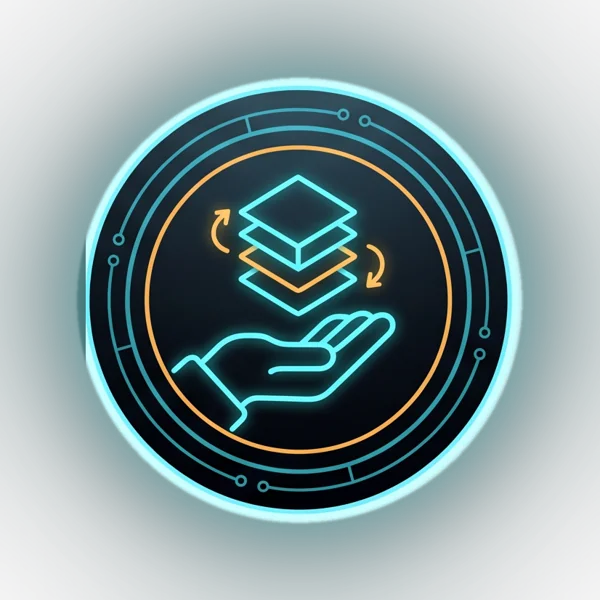
Hitos
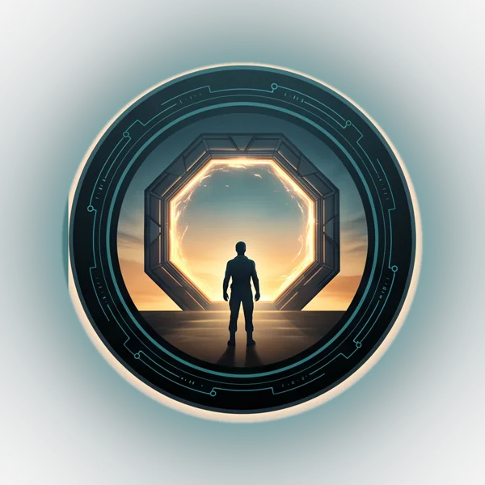
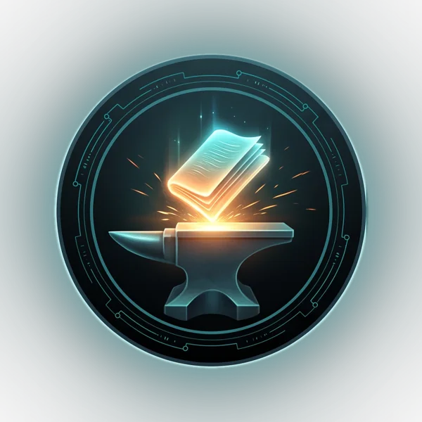
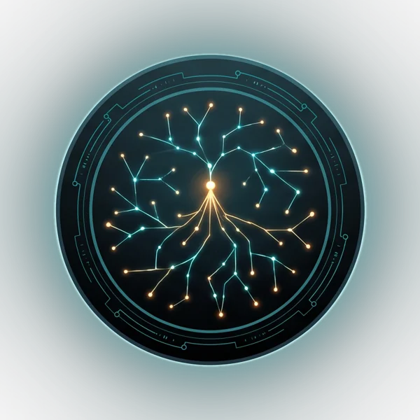
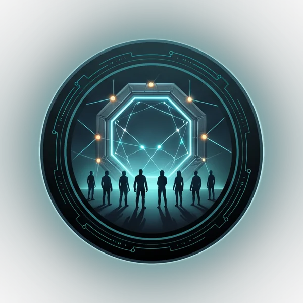
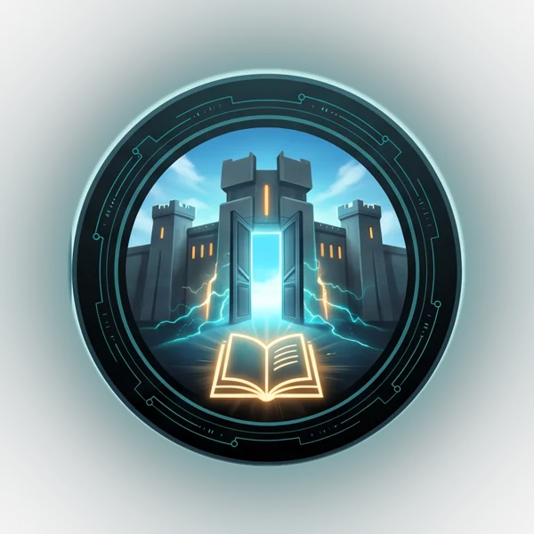
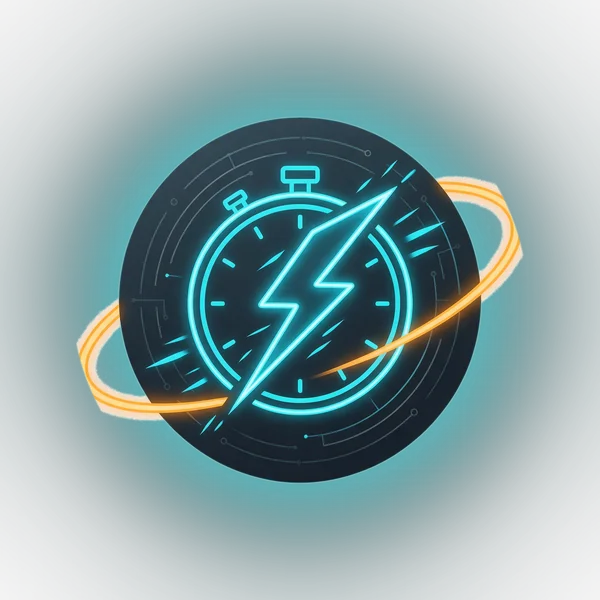
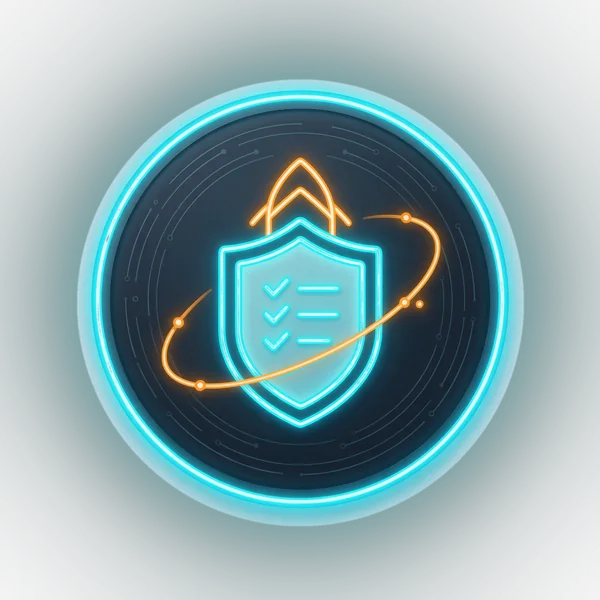
Cartas


 Plantilla Genially de la Bitácora
Plantilla Genially de la Bitácora Pautas oficiales
Pautas oficiales